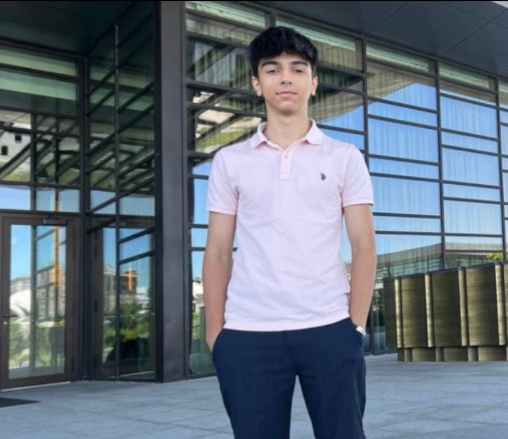
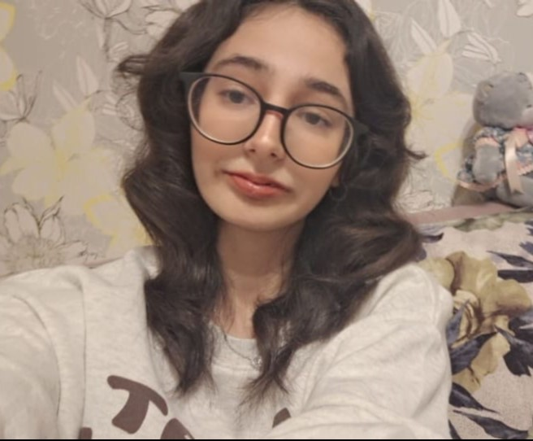

Alina Kravchenko
Leader and HTML - Primary Programmer.
Outstanding student of the BSIT Class of 2027. Shows a strong commitment to her work, excels in academics, and actively engages in challenging projects.

Amir Reza
Abbasgholizadeh
HTML Assistant
BSIT Class of 2027, showcasing a profound dedication to his coursework, attaining exceptional academic prosess, aiming to be a future programmer and consistently taking on intricate projects in with enthusiasm and expertise. Willing to learn more about web development and a proud member of Tech Squad!
Ali Rzayev
CSS - Primary Coder.
Part of the BSIT'27 group. Passionate about coding and thrive on crafting digital solutions. Beyond that, he finds joy in scoring goals on the football field and exploring virtual realms through video games.
